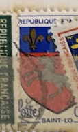
| SOURCE | TITLE| IMAGE MATCH | click to source page |
| eBay | France - 1965 - City Arms - Paris - 0.30Fr - #2242 | eBay | 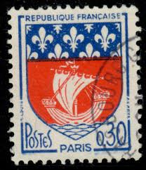 |
| eBay | France 850V Vorausentwertung unmounted mint / never hinged 1949 Crest | eBay Australia | 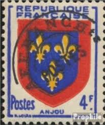 |
| eBay | Briefmarke Frankreich N°838 | eBay | 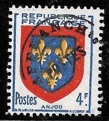 |
| Todocolección | republique française 0,20 saint-lo. - Buy Antique stamps of France on todocoleccion | 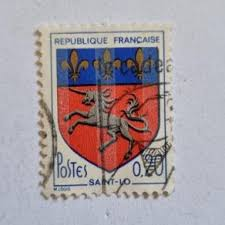 |
| HipStamp | France - 1095 - Used - SCV-0.20 | Europe - France & Colonies, General Issue Stamp / HipStamp | 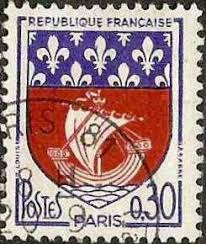 |
| At These Coordinates | January | 2024 | At These Coordinates | 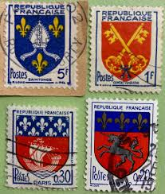 |
| eBay UK | France 1949 Anjou Arms 4f Fine Used SG 1053 VGC | eBay UK | 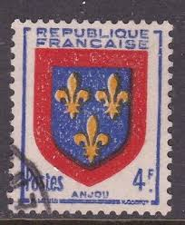 |
| eBay | French Postage 1951-1960 Year of Issue Stamps for sale | eBay | 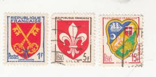 |
| HipStamp | France 1964-65 Scott 1095 used - 30c, City coat of Arms, Paris | Europe - France & Colonies, General Issue Stamp / HipStamp | 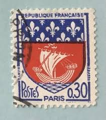 |
| Alamy | Old france postage stamp hi-res stock photography and images - Page 3 - Alamy | 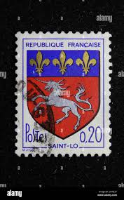 |
| BalkanAuction | Postage stamps | Philately | Collectibles | BalkanAuction | 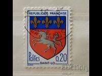 |
| eBay | FRANCE 1953, timbres 958/959, ARMOIRIES GASCOGNE/BERRI, neufs** MNH | eBay | 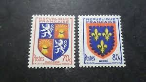 |
| Alamy | FRANCE - 1965: An 30 centimes violet-blue and red postage stamp depicting Arms of Paris, the capital and most populous city of France. Since the 17th century, Paris has been one of | 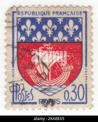 |
| eBay | FRANCASE FRANCE STAMP MNH [SALE] [Choose 10pc of MINT is $3.5] unused WM8434 | eBay | 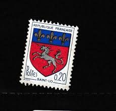 |
| Freestampcatalogue.com | Stamps from France - Freestampcatalogue.com - The free online stampcatalogue with over 500.000 stamps listed. | 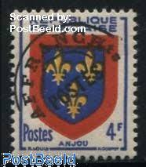 |
| Find Your Stamps Value | Value of 1f postes republique francaise blue stamp stamps | 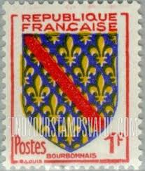 |
| Encyclopaedia Philatelica | Roger Fenneteaux - Encyclopaedia Philatelica | 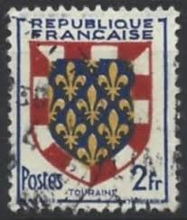 |
| Stamp Community Forum | France 1966 Coat Of Arms Saint-Lô - Stamp Community Forum | 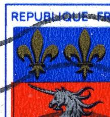 |
| philatelie-pilatte-stamps.com | France precancels 105 | |
| Colnect | Stamp: Anjou (France(Coat of Arms) Yt:FR 838,Mi:FR 850,Sn:FR 620,Sg:FR 1053,AFA:FR 862,Un:FR 838 📮 | 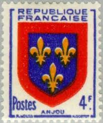 |
| eBay | France D11 MLH 1966 1v Coat of Arms | eBay | 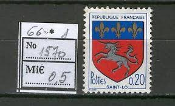 |
| stampphenom.com | France 1958 Coat of Arms – StampPhenom | 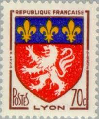 |
| eBay | Flags, National Emblems Stamps 1951-1960 Year of Issue for sale | eBay | 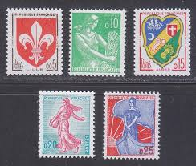 |
| Osta | Prantsusmaa " VAPID " 1966/72 (245864818) - Osta.ee | 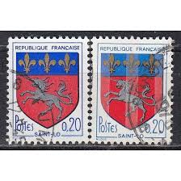 |
| French Philately | 1942 Yt 553-564 Coat of Arms Sc B135-B146 - French Philately - Stamps of France for Sale | 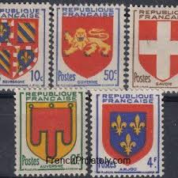 |
| Etsy | Rare Espana Stamp - Etsy | 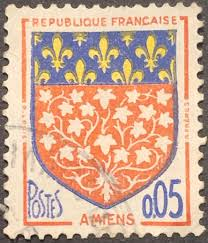 |
| HipStamp | France 1951 Scott 662 used - 2fr, Regional Coat of Arms, Touraine | Europe - France & Colonies, General Issue Stamp / HipStamp | 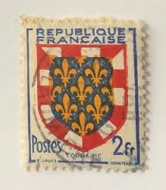 |
| Dreamstime.com | Three Vintage Stamp Printed in France Circa 1965 Shows Coat of Arms of the City of Paris Editorial Photography - Image of classic, arms: 237029442 | 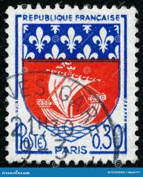 |
| 17 Vintage postage stamps ideas in 2026 | vintage postage stamps, postage stamps, vintage postage | 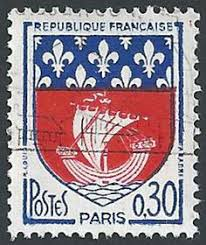 | |
| Todocolección | sello francia escudo paris 0,30 - Acheter Timbres anciens de France sur todocoleccion | 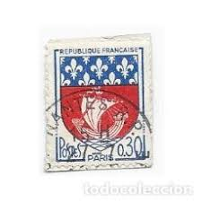 |
| Почтовые марки Украины | Buy 1959 USA Stamp (Opening of the St. Lawrence Seaway) Used №754 | 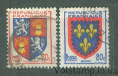 |
| eBay | FRANCE 736 - Provincial Coats of Arms "Bourbonnais" (pa42371) | eBay | 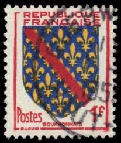 |
| Find Your Stamps Value | Value of republique rwandaise 10c stamps | 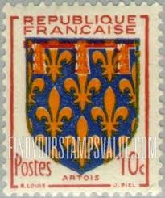 |
| X | the.casual.philatelist (@CasualPhilately) / Posts / X | 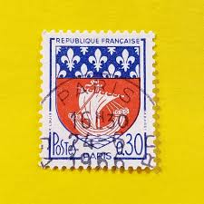 |
| Amazon.com | Amazon.com: France 1420y,1570y,1735y (Complete.Issue.) with Phosphor Strips unmounted Mint/Never hinged ** MNH 1963/71 Crest, Marianne (Stamps for Collectors) Flags/Coats of Arms/Maps : Toys & Games | 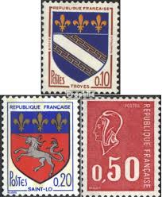 |
| Shutterstock | 8,385 Revolution Stamp Royalty-Free Images, Stock Photos & Pictures | Shutterstock | 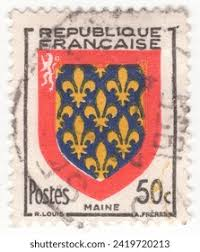 |
| HipStamp | France 1949 Scott 620 used - 4fr, Regional Coat of Arms, Anjou | Europe - France & Colonies, General Issue Stamp / HipStamp | 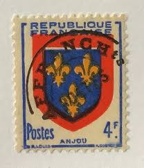 |
| Alamy | Coat of arms of city of paris hi-res stock photography and images - Alamy | 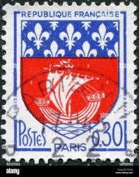 |
| HipStamp | France 902 Arms of Lille 1958 | Europe - France & Colonies, General Issue Stamp / HipStamp | 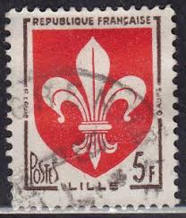 |
| Dreamstime.com | 740 Paris Postage Stamp Stock Photos - Free & Royalty-Free Stock Photos from Dreamstime | 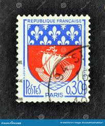 |
| eBay | FRANCE:1951 SC#662 MINT Coat of Arms | eBay | 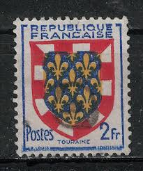 |
| Patch Williams (patch1521) – Profile | Pinterest | 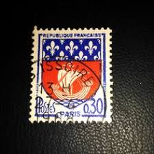 | |
| iStock | French Stamp Stock Photo - Download Image Now - Coat Of Arms, Extreme Close-Up, France - iStock | 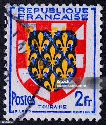 |
| Stamp Community Forum | France 1966 Coat Of Arms Saint-Lô - Stamp Community Forum | 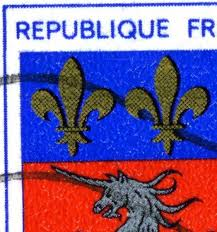 |
| lastdodo.com | Henri Cortot [1892-1950] Stamp catalogue - LastDodo | 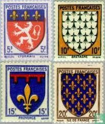 |
| Shutterstock | Set 3 Postage Stamps France On Stock Photo 18105844 | Shutterstock | 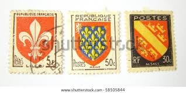 |
| eBay | France, Scott 695-696 var (Yvert 958-959), MNH IMPERFORATE pairs | eBay | 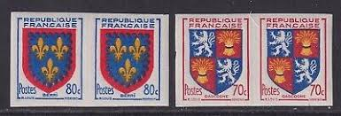 |
| Shutterstock | Paris Postage Stamp: Over 2,148 Royalty-Free Licensable Stock Photos | Shutterstock | 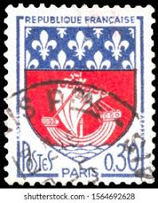 |
| eBay | France 1510C Armoirie St Lo Phosphorescent In 1966 | eBay | 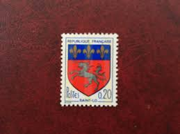 |
| Alamy | FRANCE - CIRCA 1965: a stamp printed in the France shows Returning Deportees, 1945, 20th Anniversary of the Return of People Deported during WWII, cir Stock Photo - Alamy | 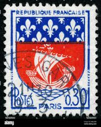 |
| Alamy | FRANCE - CIRCA 1965: a stamp printed in the France shows Etienne Regnault, Ship Taureau and Coast of Reunion, Tercentenary of Settlement of Reunion, c Stock Photo - Alamy | |
| HipStamp | France, Scott #1095, used (o), 1965, Coat of Arms Series, Arms of Paris, 30cts | Europe - France & Colonies, General Issue Stamp / HipStamp | |
| eBay | 1949 FRANCE REP FRANCAISE COAT OF ARMS VF MNH | eBay | |
| lastdodo.com | Coat of arms of Amiens, with overprint 2#0,05 (1963) - Réunion - LastDodo |  |
| eBay | France Num Yvert 902 ** MNH Armories Touraine Year 1951 | eBay | |
| Shutterstock | Foreign Post: Over 18,200 Royalty-Free Licensable Stock Photos | Shutterstock | |
| eBay | France, 1949, Stamp 838, Anjou Coat Of Arms, New | eBay | |
| iStock | Postage Stamp France 1965 Show Paris Coat Of Arms Stock Photo - Download Image Now - Paris - France, Postage Stamp, Blue - iStock | |
| eBay | Frrance 1951 10c Margin with Center Gutters Mint MNH** X772 | eBay | |
| eBay | 1954 - Fleury Vallée D'Aillant Yonne - COVER With N°940 N°958/959 X2 | eBay |